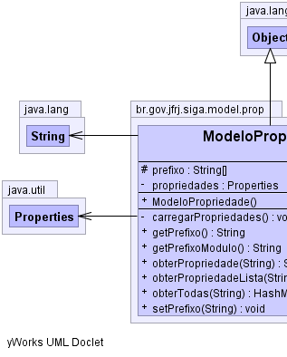
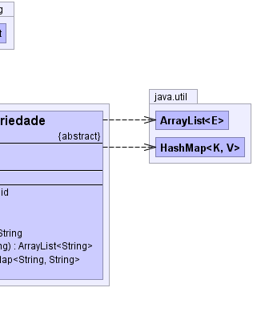

br.gov.jfrj.siga.model.prop.ModeloPropriedade
br.gov.jfrj.siga.model.prop.ModeloPropriedade
|
|||||||||
| PREV CLASS NEXT CLASS | FRAMES NO FRAMES | ||||||||
| SUMMARY: NESTED | FIELD | CONSTR | METHOD | DETAIL: FIELD | CONSTR | METHOD | ||||||||
java.lang.Object
public abstract class ModeloPropriedade
Superclasse abstrata responsável pela infraestrutura de tratamento de propriedades Toda classe que tratar propriedades estáticas deve subclasseá-la e criar um arquivo de propriedades chamado 'app.properties' no mesmo pacote que ela.
|  |  |
| Field Summary | |
|---|---|
protected java.lang.String[] |
prefixo
|
private java.util.Properties |
propriedades
|
| Constructor Summary | |
|---|---|
ModeloPropriedade()
|
|
| Method Summary | |
|---|---|
private void |
carregarPropriedades()
Carrega as propriedades |
java.lang.String |
getPrefixo()
|
abstract java.lang.String |
getPrefixoModulo()
Retorna o prefixo do módulo (programa), fazendo uma separação de namespaces para cada projeto. |
java.lang.String |
obterPropriedade(java.lang.String nome)
Obtém a propriedade referente ao nome (parâmetro) ou null se não existir. |
java.util.ArrayList<java.lang.String> |
obterPropriedadeLista(java.lang.String nome)
obtém uma lista de propriedades que começam com um nome (parâmetro) que é separado por um ponto e seguido de um numero sequencial. |
java.util.HashMap<java.lang.String,java.lang.String> |
obterTodas(java.lang.String nome)
Obtém um HashMap com as chaves e respectivos valores das propriedades cuja chave contém o nome passado como parâmetro, esteja ou não essa propriedade acompanhada do prefixo do módulo no arquivo de propriedades. |
void |
setPrefixo(java.lang.String prefstr)
atribui o prefixo para as propriedades. |
| Methods inherited from class java.lang.Object |
|---|
clone, equals, finalize, getClass, hashCode, notify, notifyAll, toString, wait, wait, wait |
| Field Detail |
|---|
private java.util.Properties propriedades
protected java.lang.String[] prefixo
| Constructor Detail |
|---|
public ModeloPropriedade()
| Method Detail |
|---|
public abstract java.lang.String getPrefixoModulo()
| projeto | prefixo do módulo |
|---|---|
| siga-cp | siga.cp |
| siga-ex | siga.ex |
| siga-ldap | siga.ldap |
| siga-base | siga.base |
| siga-cd-base | siga.cd.base |
private void carregarPropriedades()
throws java.lang.Exception
java.lang.Exceptionpublic void setPrefixo(java.lang.String prefstr)
prefstr - a string de parâmetros contendo os prefixos separados por
pontospublic java.lang.String getPrefixo()
public java.lang.String obterPropriedade(java.lang.String nome)
throws java.lang.Exception
nome - nome da propriedade a carregar.
java.lang.Exception
public java.util.ArrayList<java.lang.String> obterPropriedadeLista(java.lang.String nome)
throws java.lang.Exception
nome - nome do parâmetro a obter. Se atribuído o prefixo, o mesmo não
deve estar contido.
java.lang.Exception
public java.util.HashMap<java.lang.String,java.lang.String> obterTodas(java.lang.String nome)
throws java.lang.Exception
nome - nome do parâmetro a obter. Se atribuído o prefixo, o mesmo não
deve estar contido.
java.lang.Exception
|
|||||||||
| PREV CLASS NEXT CLASS | FRAMES NO FRAMES | ||||||||
| SUMMARY: NESTED | FIELD | CONSTR | METHOD | DETAIL: FIELD | CONSTR | METHOD | ||||||||